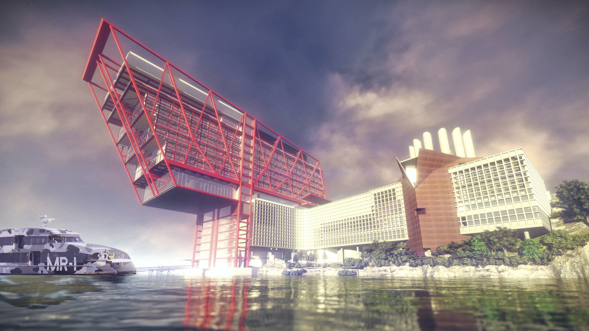
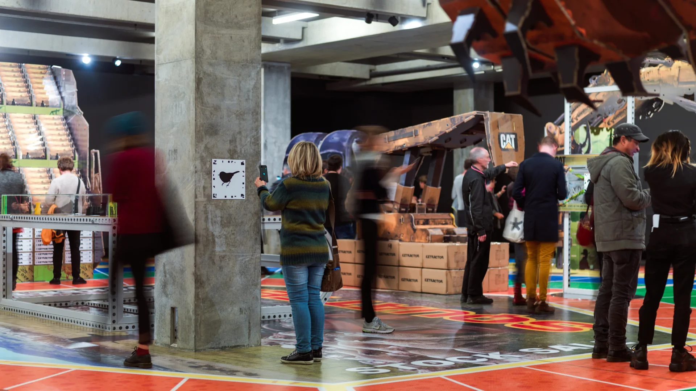
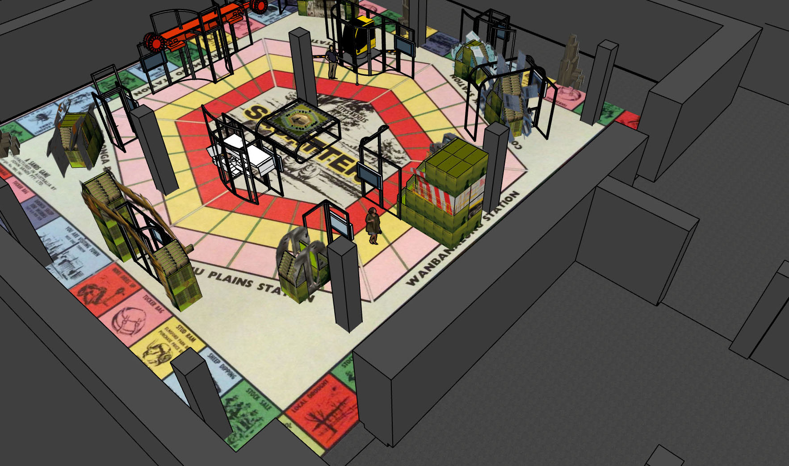
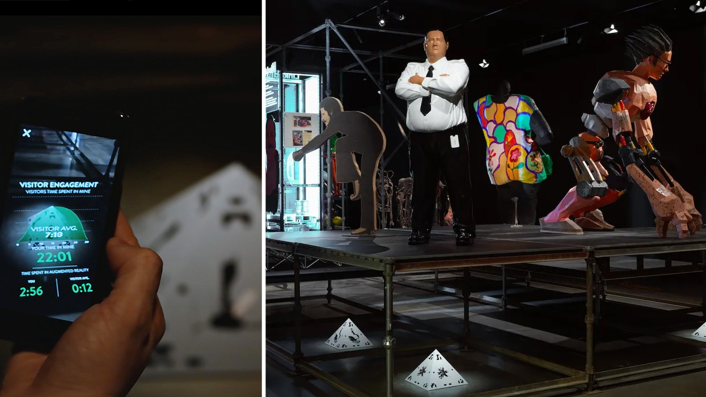
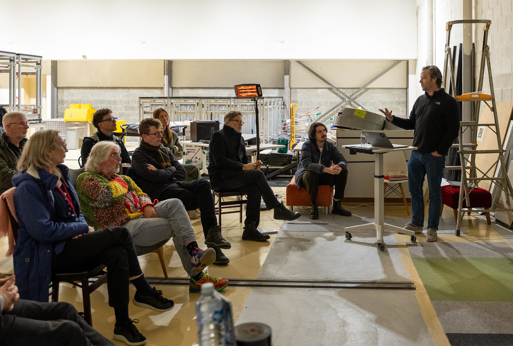

Museum of Old + New Art
Hobart, Australia
Mona is not a conventional museum. It avoids fixed interpretation and expects visitors to find their own way through the work. As David Walsh once put it, "80% of people love it, 20% hate it."
Since 2018, I’ve worked with Mona across exhibitions, digital experiences, and broader visitor experience planning. The work draws directly from the museum’s ethos: give people agency, let them get a little lost, and trust them to make sense of what they encounter.

Early render for the Mona Hotel.
My role has been to shape how that plays out in practice. How much context is enough? When should something be explained, and when should it be left alone? Push too far and people disengage. Hold back too much and the experience collapses into confusion. The work sits in that middle ground.

Simon Denny's MINE exhibition at Mona.
This has included handheld audio experiences, exhibition development, and early-stage thinking for future spaces and programs. Across each, the aim is not to guide visitors to a single reading, but to give them just enough to stay with the work and form their own.

3D model we used for spatial concept and visitor experience planning.

Design and technology are deeply embedded throughout the museum.

Presenting experience concepts to David Walsh, Nonda Katsalidis and museum leadership.
The relationship has developed over time, moving between specific commissions and broader strategic conversations. It’s less a single project than an ongoing collaboration, shaped by iteration and a shared willingness to test how far a museum experience can be pushed before it breaks.